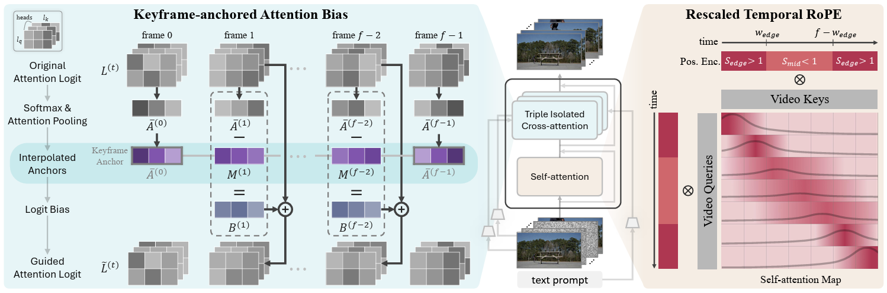
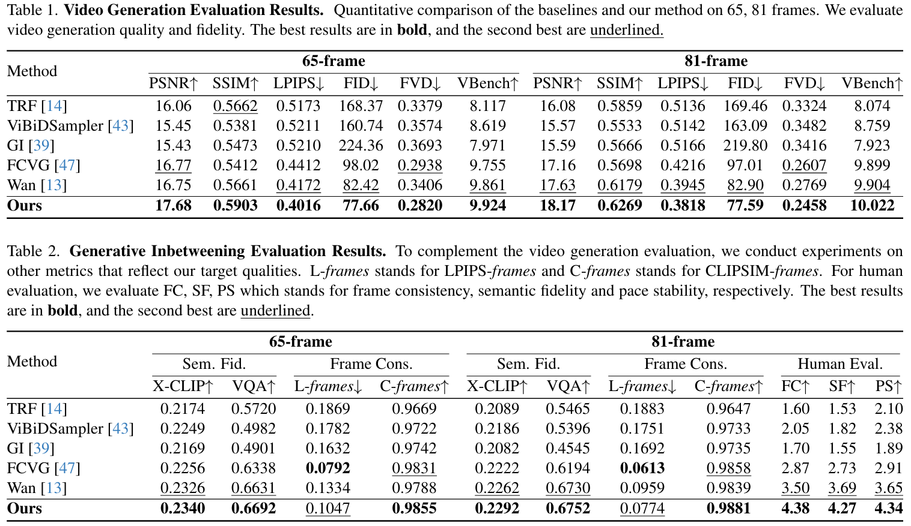

We introduce a training-free approach on the task of generative inbetweening which generates intermediate frames using the two keyframes and text.
Generative inbetweening (GI) seeks to synthesize realistic intermediate frames between the first and last keyframes beyond mere interpolation. As sequences become sparser and motions larger, previous GI models struggle with inconsistent frames with unstable pacing and semantic misalignment. Since GI involves fixed endpoints and numerous plausible paths, this task requires additional guidance gained from the keyframes and text to specify the intended path. Thus, we give semantic and temporal guidance from the keyframes and text onto each intermediate frame through Keyframe-anchored Attention Bias. We also better enforce frame consistency with Rescaled Temporal RoPE, which allows self-attention to attend to keyframes more faithfully. TGI-Bench, the first benchmark specifically designed for text-conditioned GI evaluation, enables challenge-targeted evaluation to analyze GI models. Without additional training, our method achieves state-of-the-art frame consistency, semantic fidelity, and pace stability for both short and long sequences across diverse challenges.

Overall Pipeline of Our Method. Our model is built upon a video DiT pipeline that consists of DiT blocks with self-attention and cross-attention layers. Left: Keyframe-anchored Attention Bias is performed for each condition's cross-attention, which aggregates cross-attention maps from each keyframes to form keyframe anchors. These keyframe anchors are interpolated to frame-wise target anchors, which are used as a small logit bias to guide each intermediate frames. Right: Furthermore, we introduce Rescaled Temporal RoPE, which increases temporal RoPE scale at the edges and reduces in the middle. As a result, edge frames place most of their attention on nearby frames while middle frames spread their attention across a wider temporal range.

We compute PSNR, SSIM, and LPIPS against ground truth frames, use FVD, FID and VBench score to measure overall video quality. We select 8 relevant dimensions for VBench: I2V Subject, I2V Background, Subject Consistency, Background Consistency, Motion Smoothness, Aesthetic Quality and Imaging Quality. Semantic fidelity is measured by X-CLIP text-to-video similarity, which compares prompt and generated video embeddings. For the video visual question answering (VQA) score, we average over 6 different QA models to reduce variance. Frame consistency is further evaluated with LPIPS-frames and CLIPSIM-frames, which average similarities between adjacent frames following prior works. As automatic measurements are unreliable to properly evaluate our target qualities, semantic fidelity and pace stability, we run a user study on 10\% of the video samples, focusing on 81-frame videos. As shown above, our method improves both semantic fidelity and frame consistency. Also, our method attains the highest human-rated semantic fidelity and pace stability.
Woman catches ball thrown by man on the beach.
Broom sweeps debris into dustpan on wooden floor.
Person rides a hoverboard forward and then steps off.
Four women in white walk forward on a cobblestone street.
A freight train moves forward through heavy falling snow.
People walk past benches at the subway station.
Bird is dancing, flapping its wings and shaking its tail feathers.
Dog walks forward and puts nose into the bowl.
The dog runs quickly to the left across the sandy beach.
The rodent is eating its food.
Santa who is lost in the song, dances.
Dog runs through shallow water toward the viewer.
Dancers move from standing to crouching in a circle.
The dog chases the ducks across the grassy field.
Boxers are punching toward each other.
Girl runs forward through the wheat field.
Monkey climbs branches while another monkey jumps leftward.
The gazelle is chewing something.
Man eats food with a spoon and begins chewing.